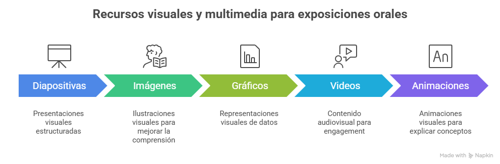
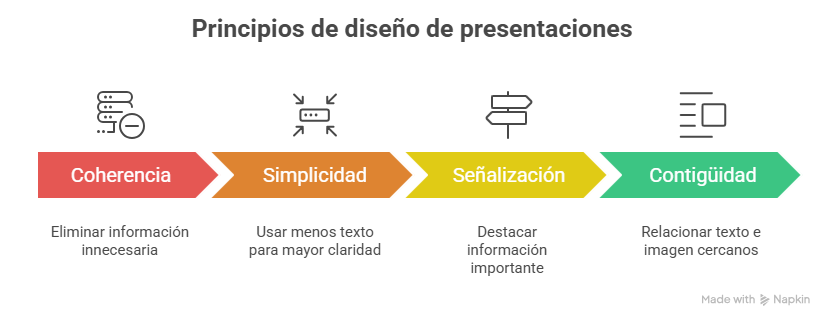
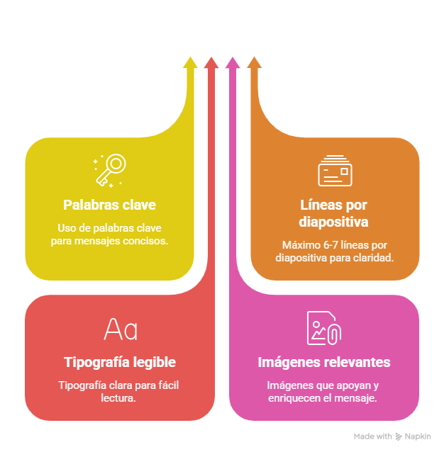
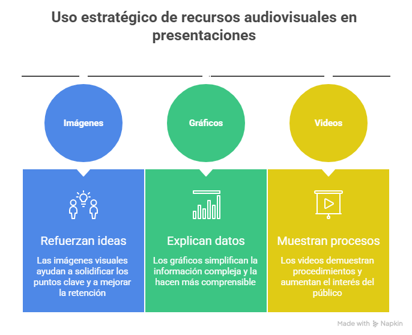
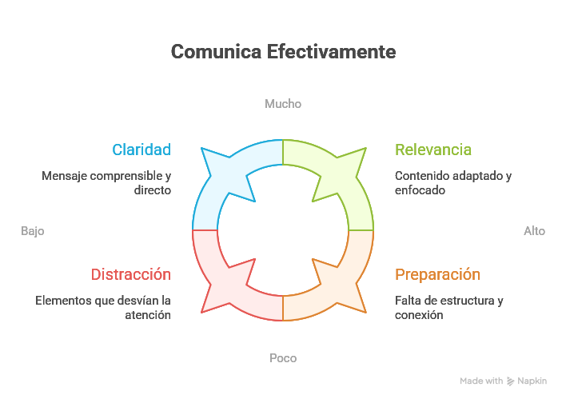
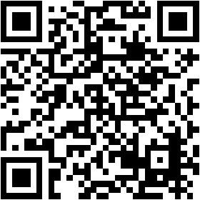
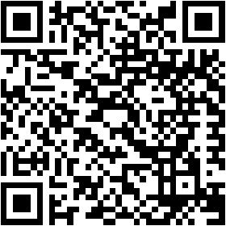
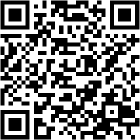
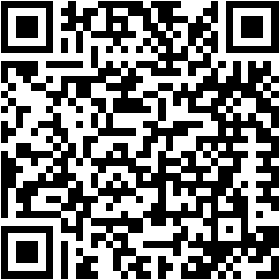
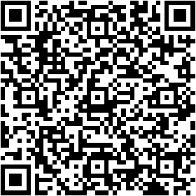

Uso de medios audiovisuales en presentaciones
Una presentación no se fortalece solo con lo que dices, sino con la forma en que lo muestras. Diapositivas, imágenes, gráficos, videos y prototipos pueden aclarar ideas, sostener la atención y hacer más comprensible un proyecto de software cuando se usan con intención.

Idea clave del tema
Un recurso audiovisual funciona mejor cuando reduce la carga cognitiva, destaca lo esencial y ayuda a la audiencia a entender un problema, una solución o un resultado con menos esfuerzo.
Objetivos de aprendizaje
- 🧠 Diseñar presentaciones visuales claras que orienten la comprensión y mantengan el foco en la idea central.
- 💡 Aplicar principios de diseño para reducir la sobrecarga visual y mejorar la comprensión del mensaje.
- 🔧 Integrar recursos audiovisuales de forma estratégica según el tipo de contenido que se presenta.
- 📦 Evitar la sobrecarga de información al detectar excesos de texto, decoración o animaciones innecesarias.
- 🚀 Comunicar proyectos de software con apoyo visual mediante interfaces, arquitecturas, resultados y funcionalidades claras.
Desarrollo del contenido
Recorre cada bloque para identificar qué recurso conviene usar, cómo diseñarlo y de qué forma integrarlo con tu discurso.
Son los recursos visuales y multimedia que acompañan tu exposición oral: diapositivas, imágenes, diagramas, gráficos, videos, animaciones o demostraciones. Su función no es reemplazarte, sino reforzar el mensaje para que la audiencia entienda con mayor rapidez.
Muestran
Procesos, pantallas, relaciones o datos que serían más difíciles de explicar solo con palabras.
Resaltan
La idea principal cuando ubican la mirada en un punto, un contraste o una secuencia específica.
Sintetizan
Información extensa para volverla más breve, legible y recordable.
Conectan
La teoría con ejemplos concretos del entorno profesional o académico.
Función principal
Reforzar el mensaje del expositor sin desplazarlo del centro de la presentación.
El diseño visual debe apoyarse en la forma en que las personas procesan la información. Richard E. Mayer plantea que el aprendizaje multimedia mejora cuando se reduce la carga cognitiva y se presenta solo lo necesario para entender el mensaje.
Elimina adornos, texto o sonidos que no aportan comprensión.
Reduce el contenido a ideas clave, palabras guía y visuales limpios.
Usa color, tamaño o disposición para indicar qué debe mirar primero la audiencia.
Coloca juntos los elementos relacionados para evitar búsquedas innecesarias.
Una diapositiva eficaz no muestra todo lo que sabes. Muestra lo indispensable para que la audiencia siga tu explicación.

Buenas prácticas
- • Usa palabras clave en lugar de párrafos extensos.
- • Mantén pocas ideas por diapositiva.
- • Selecciona tipografías legibles y con contraste suficiente.
- • Integra imágenes o gráficos que expliquen, no que decoren.
Errores comunes
- • Saturar la diapositiva con texto y detalles secundarios.
- • Usar demasiados colores, efectos o animaciones.
- • Elegir imágenes poco relacionadas con el tema.
- • Convertir la pantalla en un guion para leer.
Criterio rápido
Si la audiencia puede entender la lámina sin quedar atrapada leyendo, vas por buen camino.


Imágenes o capturas
Sirven para mostrar interfaces, estados de una aplicación, flujos o evidencias visuales.
Gráficos y diagramas
Ayudan a explicar tendencias, comparaciones, arquitectura o relaciones entre componentes.
Videos o animaciones
Conviene usarlos cuando el movimiento o la demostración agregan comprensión real.
Regla de uso
Deben ser breves, relevantes y estar conectados con el punto que estás explicando en ese momento.
Una presentación efectiva combina dos capas al mismo tiempo: lo que dices y lo que muestras. Ambas deben estar sincronizadas para que la audiencia relacione la explicación con el apoyo visual.
Nombra
Explica qué debe mirar la audiencia antes de profundizar.
Interpreta
Aclara qué significa el dato, la imagen o el diagrama.
Conecta
Relaciona el apoyo visual con la conclusión o acción que buscas provocar.
Error frecuente
Leer la diapositiva rompe la conexión con la audiencia y vuelve innecesario tu papel como expositor.

🖥️
Interfaces UI/UX
Capturas o prototipos permiten mostrar cómo se ve y se navega el producto.
🧭
Arquitectura
Diagramas simples ayudan a explicar capas, servicios, APIs y flujos de datos.
📈
Resultados
Gráficos comparativos permiten evidenciar mejoras, tiempos o conversiones.
⚙️
Funcionalidades
Una demo corta suele ser más convincente que una descripción abstracta.
Ejemplo aplicado
Si presentas un nuevo módulo, mostrar un prototipo o una interfaz navegable suele comunicar mejor el valor del proyecto que describirlo con texto técnico.
Actividades
Practica la selección de apoyos visuales, detecta errores de diseño y organiza una secuencia de diapositivas sobre el ciclo cliente-servidor.
Actividad 1
Diagnóstico de diseño visual
Marca si cada situación representa una buena práctica o un error al diseñar diapositivas.
Actividad 2
Organiza la secuencia de 5 diapositivas
Construye el orden ideal para explicar el ciclo de solicitud y respuesta entre cliente y servidor.
Situación base: cuando escribes una dirección en el navegador y presionas Enter, el cliente envía una solicitud HTTP al servidor, el servidor procesa la petición y devuelve una respuesta con archivos como HTML, CSS y JavaScript; luego el navegador interpreta ese código y construye la página visible.
Elige los bloques en el orden correcto:
Tu secuencia:
Haz clic sobre cada bloque para agregarlo. Si quieres quitar uno, haz clic sobre la etiqueta creada.
Actividad 3
Elige el apoyo visual más pertinente
Relaciona cada situación con el recurso audiovisual que mejor ayuda a comprenderla.
Evaluación
Responde el cuestionario para comprobar si distingues la función de los medios audiovisuales, sus principios de diseño y su aplicación en software.
Recursos para profundizar
Para ampliar tu conocimiento sobre medios audiovisuales en presentaciones, te recomendamos explorar los siguientes recursos:
-
Video: Toastmasters: How to Use Visual Aids
Recurso en video sobre cómo usar apoyos visuales sin perder contacto con la audiencia ni desplazar la voz del expositor.
Ir al recurso
-
Lectura: Toastmasters: Ayudas visuales y accesorios
Lectura en español con orientaciones para integrar objetos, láminas o apoyos visuales de forma pertinente dentro de una presentación.
Ir al recurso
-
Videos: TED-Ed: Public Speaking 101
Colección de lecciones en video para fortalecer la presentación oral, la construcción del mensaje y la relación con la audiencia.
Ir al recurso
-
Artículo: Toastmasters Magazine: Back to the Basics: Visual Aids
Artículo centrado en el valor de los recursos visuales y en las decisiones básicas que mejoran su uso durante una intervención oral.
Ir al recurso
-
Guía práctica: Microsoft Support: Tips for Creating and Delivering an Effective Presentation
Guía de apoyo para revisar estructura, diseño y entrega de una presentación antes de exponerla en clase o en un entorno profesional.
Ir al recurso